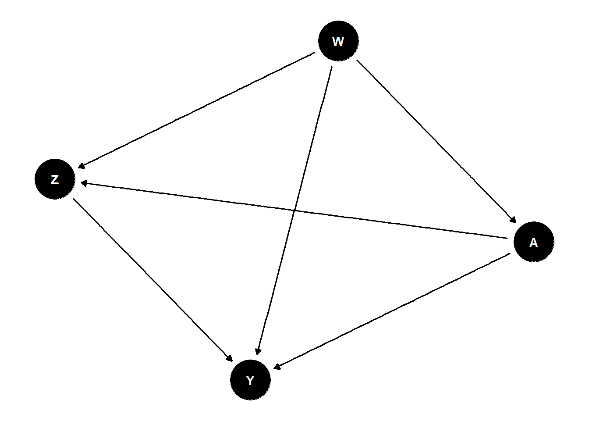

Attaching package: 'ggdag'The following object is masked from 'package:stats':
filter
Causal Mediation Analysis · tlverse 官方手册中译
\(\DeclareMathOperator{\expit}{expit}\) \(\DeclareMathOperator{\logit}{logit}\) \(\DeclareMathOperator*{\argmin}{\arg\!\min}\) \(\newcommand{\indep}{\perp\!\!\!\perp}\) \(\newcommand{\coloneqq}{\mathrel{=}}\) \(\newcommand{\R}{\mathbb{R}}\) \(\newcommand{\E}{\mathbb{E}}\) \(\newcommand{\M}{\mathcal{M}}\) \(\renewcommand{\P}{\mathbb{P}}\) \(\newcommand{\I}{\mathbb{I}}\)来源：Targeted Learning in R: Causal Data Science with the
tlverseSoftware Ecosystem，作者 Mark van der Laan、Jeremy Coyle、Nima Hejazi、Ivana Malenica、Rachael Phillips、Alan Hubbard，采用 CC BY 4.0 许可。 本页为中文翻译，非原文；依 CC BY 4.0 保留原作者署名与许可证声明，并标明本页是经过修改（翻译）的版本。 原作品按「现状」提供，原作者不附任何明示或默示的担保（见 CC BY 4.0 第 5 节免责声明）；译文中的任何疏漏由译者负责，不代表原作者观点。 译自源码仓库 tlverse/tlverse-handbook 修订2931693（2024-09-21）的10-tmle3mediate.Rmd。本章作者为 Nima Hejazi。 格式适配说明：原书用 bookdown 撰写，本站为 Quarto。带编号的公式改用 Quarto 的{#eq-...}标签，交叉引用相应改为@eq-...；原书的.infobox、.definition、.exercise、.solution环境改用 Quarto 的 callout 呈现；指向 tlverse.org 各章的站内链接改为指向本站对应中译页。数学内容、代码与引用键均未改动。 本页 NIE / NDE 两个估计代码块未在本站执行：以今日从 GitHub 安装的sl3/tmle3mediate开发版运行时，tmle3mediate内部构造sl3_Task未指定 outcome 节点，报Node outcome not specified，属上游包版本不兼容（原书构建于 2024 年的较早版本）。这两块按原文逐字保留但标记为不执行，页面因此不显示其输出，本页也不臆造任何数值。其余代码块正常执行。 页内 R 代码块按原文逐字保留，并由本站以 R 4.4.3 重新执行；因数据在代码中被随机抽样（sample(.N, 600)），数值会与原书不同。原书习题的参考解答在上游即标注为「Forthcoming」（尚未给出），本页如实保留。
Nima Hejazi
主角是 tmle3mediate R 包。
tmle3mediate R 包估计二值处理的自然直接效应与自然间接效应。tmle3mediate R 包估计二值处理的人群干预直接效应。从生物学、流行病学到经济学与心理学，科学探究常常关心的是：处理对结局变量的效应，究竟有多少是只经由两者之间某些特定路径实现的。当存在受暴露影响的处理后中间变量（即中介变量）时，路径特异效应让人能够把这类复杂的机制性关系拆解开来。这类因果效应受到如此广泛的关注，以致它们的定义与识别在统计学中已被研究了近一个世纪——事实上，现代因果中介分析最早的例子可以追溯到路径分析的工作 (Wright 1934)。近几十年来，重新燃起的兴趣促成了在潜在结局框架与非参数结构方程建模框架下对新式直接效应与间接效应的表述 (Robins 1986; Pearl 1995, 2009; Spirtes 等 2000; Dawid 2000)。一般而言，间接效应（IE）是总效应中被发现经由中介变量起作用的那一部分，而直接效应（DE）涵盖总效应的其余所有成分，既包括处理对结局的直接效应，也包括它经由所有不显式涉及中介变量的路径所产生的效应。直接效应与间接效应所传达的机制性知识，可以用来增进我们对处理为何以及如何有效的理解。
现代因果推断方法使人得以大幅超越传统路径分析的方法学，克服了使用参数建模路线所带来的重大限制 (T. VanderWeele 2015)。Robins 和 Greenland (1992) 与 Pearl (2001) 在各自不同的框架下，给出了把平均处理效应分解为自然直接效应与自然间接效应的等价非参数分解。T. VanderWeele (2015) 对经典因果中介分析作了全面综述。我们则提供另一种视角，转而聚焦于这些量的有效估计量的构造——这类估计量直到近期才出现 (Tchetgen Tchetgen 和 Shpitser 2012; Zheng 和 van der Laan 2012)——以及基于随机化干预的、更为灵活的直接效应与间接效应定义 (Dı́az 和 Hejazi 2020)。
让我们回到熟悉的 \(n\) 个单元样本 \(O_1, \ldots, O_n\)，只是现在我们为任一给定观测单元考虑一个略微复杂些的数据结构 \(O = (W, A, Z, Y)\)。与之前一样，\(W\) 表示观测协变量向量，\(A\) 是二值或连续处理，\(Y\) 是二值或连续结局；新增的处理后变量 \(Z\) 表示一组（可能是多元的）中介变量。为避免作出缺乏背景科学知识支撑的假设，我们只假定 \(O \sim P_0 \in \M\)，其中 \(\M\) 是非参数统计模型，对数据生成分布 \(P_0\) 的形式不作任何假设。
与前几章一样，结构因果模型（SCM）(Pearl 2009) 有助于把我们反事实变量的定义形式化：
\[\begin{align} W &= f_W(U_W) \\ \nonumber A &= f_A(W, U_A) \\ \nonumber Z &= f_Z(W, A, U_Z) \\ \nonumber Y &= f_Y(W, A, Z, U_Y). \end{align} \tag{163.1}\]
这组方程构成了生成观测数据 \(O\) 的机制性模型；此外，该 SCM 还编码了若干基本假设。首先，存在一个隐含的时间顺序：\(W\) 最先发生，只依赖外生因素 \(U_W\)；接着是 \(A\)，它基于 \(W\) 与外生因素 \(U_A\)；然后是中介变量 \(Z\)，它依赖于 \(A\)、\(W\) 以及另一组外生因素 \(U_Z\)；最后才出现结局 \(Y\)。我们既不假定能获知外生因素集合 \(\{U_W, U_A, U_Z, U_Y\}\)，也不假定知道确定性生成函数 \(\{f_W, f_A, f_Z, f_Y\}\) 的形式。实践中，任何关于数据生成实验的可用知识都应被纳入这个模型——例如，若数据来自随机对照试验（RCT），\(f_A\) 的形式可能是已知的。该 SCM 对应于下面这个 DAG：
Attaching package: 'ggdag'The following object is masked from 'package:stats':
filter
对数据 \(O\) 的似然作因子分解，我们可以把 \(p_0\)（\(O\) 相对于乘积测度的密度）在某个特定观测 \(o\) 上求值时，表示为若干正交成分之积：
\[\begin{align} p_0(o) = &q_{0,Y}(y \mid Z = z, A = a, W = w) \\ \nonumber &q_{0,Z}(z \mid A = a, W = w) \\ \nonumber &g_{0,A}(a \mid W = w) \\ \nonumber &q_{0,W}(w).\\ \nonumber \end{align} \tag{163.2}\]
在 式 163.2 中，\(q_{0, Y}\) 是 \(Y\) 在给定 \(\{Z, A, W\}\) 下的条件密度，\(q_{0, Z}\) 是 \(Z\) 在给定 \(\{A, W\}\) 下的条件密度，\(g_{0, A}\) 是 \(A\) 在给定 \(W\) 下的条件密度，\(q_{0, W}\) 是 \(W\) 的边际密度。为方便并保持记号一致，我们定义 \(\overline{Q}_Y(Z, A, W) := \E[Y \mid Z, A, W]\) 以及 \(g(A \mid W) := \P(A \mid W)\)（即倾向性评分）。
我们明确排除了那些受暴露影响、且同时是中介—结局关系混杂因素的变量（即受 \(A\) 影响、又同时影响 \(Z\) 与 \(Y\) 的变量）。在存在这类变量时做中介分析很有挑战 (Avin, Shpitser, 和 Pearl 2005)；因此，多数发展因果直接效应与间接效应定义的努力，都显式地假定不存在这类混杂。在没有进一步假设的情况下，常见的中介参数（自然直接效应与自然间接效应）在存在此类混杂时无法被识别，不过 Tchetgen Tchetgen 和 VanderWeele (2014) 讨论了一个单调性假设，当所研究系统的可用科学知识能为其提供依据时，它可能有用。有兴趣的读者不妨查阅因果中介分析这一庞大且快速增长的文献中的新近进展，包括干预式（interventional）直接效应与间接效应 (Didelez, Dawid, 和 Geneletti 2006; T. J. VanderWeele, Vansteelandt, 和 Robins 2014; Lok 2016; Vansteelandt 和 Daniel 2017; Rudolph 等 2017; Nguyen, Schmid, 和 Stuart 2019)，它们的识别对这种复杂形式的处理后混杂是稳健的。在这一脉络的文献中，Dı́az 等 (2020) 与 Benkeser 和 Ran (2021) 讨论了非参数效应分解与效率理论，而 Hejazi 等 (2022) 则借助随机化干预表述了一类新的效应。
自然直接效应与自然间接效应源自对 ATE 的一个分解：
\[\begin{align*} \E[Y(1) - Y(0)] = &\underbrace{\E[Y(1, Z(0)) - Y(0, Z(0))]}_{\text{NDE}} \\ &+ \underbrace{\E[Y(1, Z(1)) - Y(1, Z(0))]}_{\text{NIE}}. \end{align*}\]
具体来说，自然间接效应（NIE）度量处理 \(A \in \{0, 1\}\) 经由中介变量 \(Z\) 对结局 \(Y\) 产生的效应，而自然直接效应（NDE）度量处理经由所有其他路径对结局产生的效应。识别自然直接效应与自然间接效应需要下列不可检验的因果假设。注意，一致性与无干扰这两条标准假设（即 SUTVA (Rubin 1978, 1980)）之所以成立，是因为：(1) 我们考虑的 SCM 受到限制，只产生独立同分布（iid）的单元；(2) 一致性是 SCM 的推论性质，因为反事实在这里是派生量（而非潜在结局框架中的原始量）；Pearl (2010) 对后一点有很有启发的讨论。
\(Y(a, z) \indep (A, Z) \mid W\)，这进一步意味着 \(\E\{Y(a, z) \mid A=a, W=w, Z=z\} \equiv \E\{Y(a, z) \mid W=w\}\)。这是”存在中介变量时无未测混杂”这一标准假设的一个特殊且更具限制性的情形。与之对应的随机化假设，就是把标准随机化假设施加于对处理 \(A\) 与中介变量 \(Z\) 的联合干预。
对任意 \(a \in \mathcal{A}\) 与 \(w \in \mathcal{W}\)，处理的条件概率 \(g(a \mid w)\) 与单位区间的两端之间至少相隔一个小量 \(\xi > 0\)。更确切地说，\(\xi < g(a \mid w) < 1 - \xi\)。这与静态干预所需的标准正性假设相呼应，前文已讨论过。
对任意 \(z \in \mathcal{Z}\)、\(a \in \mathcal{A}\) 与 \(w \in \mathcal{W}\)，条件中介密度必须与零之间至少相隔一个小量 \(\epsilon > 0\)，即 \(\epsilon < q_{0,Z}(z \mid a, w)\)。本质上，这要求条件中介密度对其联合支撑集 \(\mathcal{Z} \times \mathcal{A} \times \mathcal{W}\) 中所有 \(\{z, a, w\}\) 都与零保持距离；也就是说，在由处理 \(A\) 与基线协变量 \(W\) 共同定义的各个层中，任何给定的中介取值都必须有可能被观测到。该假设也有一个限制较弱的形式——具体而言，是要求两种处理对照下中介密度之比有界。
对所有 \(a \neq a'\)（其中 \(a, a' \in \mathcal{A}\)）与 \(z \in \mathcal{Z}\)，在给定 \(W\) 下，\(Y(a', z)\) 必须与 \(Z(a)\) 独立。也就是说，处理对照 \(a' \in \mathcal{A}\) 之下的反事实结局，与（另一对照 \(a \in \mathcal{A}\) 之下的）反事实中介取值 \(Z(a) \in \mathcal{Z}\)，二者必须都是可观测的。“跨世界”一词指的是 \(Z(a)\) 与 \(Y(a', z)\) 这两个反事实存在于两种不同的处理对照之下。尽管它们的联合分布有明确定义，这两个反事实却永远无法被同时实现。
前三条假设因为在更简单设定中有其类比而可能较为熟悉，而跨世界独立性这一要求则是识别自然直接效应与自然间接效应所独有的。这一假设化解了识别这类路径特异效应时的一个棘手难题，Avin, Shpitser, 和 Pearl (2005) 把它称作”反悔的证人”（recanting witness），并给出了与该假设等价的图论解法。事实上，这种由不同干预所索引的反事实之间的独立性，对这些效应定义的科学相关性构成了严重限制：它导致 NDE 与 NIE 在随机试验中不可识别 (Robins 和 Richardson 2010)，这意味着相应的科学论断无法通过实验被证伪 (Popper 1934; Dawid 2000)，从而直接违背了科学方法的一个根基。
尽管已有许多削弱这最后一条假设的尝试 (Petersen, Sinisi, 和 van der Laan 2006; Imai, Keele, 和 Yamamoto 2010; Vansteelandt, Bekaert, 和 Lange 2012; Vansteelandt 和 VanderWeele 2012)，但这些结果要么施加了严格的建模假设，要么给出了自然效应的另一种解释，要么只是通过给出更易满足的条件来提供有限的额外灵活性。例如，Petersen, Sinisi, 和 van der Laan (2006) 只要求该假设对条件均值（而非各个不同的反事实）成立，从而削弱了它，并把自然直接效应视为另一类直接效应——受控直接效应——的加权平均。有兴趣的读者不妨自行深入考察这些细节。下面我们回顾 NDE 与 NIE 的估计，它们在现代因果中介分析应用中仍被广泛使用。
NDE 定义为
\[\begin{align*} \psi_{\text{NDE}} =&~\E[Y(1, Z(0)) - Y(0, Z(0))] \\ =& \sum_w \sum_z [\underbrace{\E(Y \mid A = 1, z, w)}_{\overline{Q}_Y(A = 1, z, w)} - \underbrace{\E(Y \mid A = 0, z, w)}_{\overline{Q}_Y(A = 0, z, w)}] \\ &\times \underbrace{p(z \mid A = 0, w)}_{q_Z(Z \mid 0, w))} \underbrace{p(w)}_{q_W}, \end{align*}\]
其中各个似然因子来自联合似然的因子分解：
\[ p(w, a, z, y) = \underbrace{p(y \mid w, a, z)}_{q_Y(A, W, Z)} \underbrace{p(z \mid w, a)}_{q_Z(Z \mid A, W)} \underbrace{p(a \mid w)}_{g(A \mid W)} \underbrace{p(w)}_{q_W}. \]
估计 NDE 的流程，首先要构造 \(\overline{Q}_{Y, n}\)，即结局在给定 \(Z\)、\(A\) 与 \(W\) 下条件均值的估计。有了这个条件均值的估计，就可以很容易地得到 \(\overline{Q}_Y(Z, 1, W)\)（令 \(A = 1\)）与 \(\overline{Q}_Y(Z, 0, W)\)（令 \(A = 0\)）的预测值。我们把这两个条件均值之差记作 \(\overline{Q}_{\text{diff}} = \overline{Q}_Y(Z, 1, W) - \overline{Q}_Y(Z, 0, W)\)，它本身只是数据分布的一个泛函参数。\(\overline{Q}_{\text{diff}}\) 刻画了 \(Y\) 的条件均值在 \(A\) 的两种对照之间的差异。
构造 NDE 的靶向最大似然（TML）估计量的流程，把 \(\overline{Q}_{\text{diff}}\) 本身当作一个冗余参数：只在对照组观测中（即那些观测到 \(A = 0\) 的个体），把它的估计 \(\overline{Q}_{\text{diff}, n}\) 对基线协变量 \(W\) 作回归；这一步的目的是移除 \(Z\) 对 \(\overline{Q}_{\text{diff}}\) 的部分边际影响，因为协变量 \(W\) 在时间上先于中介变量 \(Z\)。在对照组中把这个差值对 \(W\) 作回归，恢复出的是”把所有个体都当作落在对照条件 \(A = 0\) 下”这一设定中 \(\overline{Q}_{\text{diff}}\) 的期望。\(Z\) 对 \(\overline{Q}_{\text{diff}}\) 的任何残余可加效应，则在 TML 估计步骤中通过辅助（或称”聪明”）协变量被移除，该协变量把中介变量 \(Z\) 纳入考虑。这个辅助协变量的形式为
\[ C_Y(q_Z, g)(O) = \Bigg\{\frac{\mathbb{I}(A = 1)}{g(1 \mid W)} \frac{q_Z(Z \mid 0, W)}{q_Z(Z \mid 1, W)} - \frac{\mathbb{I}(A = 0)}{g(0 \mid W)} \Bigg\} \ . \]
拆开来看：\(\mathbb{I}(A = 1) / g(1 \mid W)\) 是 \(A = 1\) 的逆倾向性评分权重，同理 \(\mathbb{I}(A = 0) / g(0 \mid W)\) 是 \(A = 0\) 的逆倾向性评分权重。中间那一项是中介变量在对照（\(A = 0\)）与处理（\(A = 1\)）条件下条件密度之比（注意回忆上面的中介变量正性条件）。
条件密度之比以这种不易察觉的方式出现，令人担心——遗憾的是，统计文献中估计这类量的工具很稀缺 (Dı́az 和 van der Laan 2011; Hejazi, Benkeser, 和 van der Laan 2022)，而当 \(Z\) 是高维时，问题还会更复杂（计算上也更吃力）。由于只需要这两个条件密度之比，我们可以作一个方便的重参数化，即
\[ \frac{p(A = 0 \mid Z, W)}{g(0 \mid W)} \frac{g(1 \mid W)}{p(A = 1 \mid Z, W)} \ . \]
往下我们把这个重参数化后的条件概率泛函记作 \(e(A \mid Z, W) := p(A \mid Z, W)\)。同样的重参数化技巧曾被 Zheng 和 van der Laan (2012)、Tchetgen Tchetgen (2013)、Dı́az 和 Hejazi (2020)、Dı́az 等 (2020) 与 Hejazi 等 (2022) 在类似语境中使用。这一重新表述特别有用，因为它把估计问题化归为只需估计条件均值，从而打开了前面讨论过的大量机器学习算法的大门。
在引擎盖之下，结局均值之差 \(\overline{Q}_{\text{diff}}\) 与 \(e(A \mid Z, W)\)（\(A\) 在给定 \(Z\) 与 \(W\) 下的条件概率）被用来构造 TML 估计的辅助协变量。这些冗余参数在 TML 估计流程的偏倚校正更新步骤中扮演着重要角色。
NIE 的推导与估计与 NDE 类似。回忆 NIE 是 \(A\) 仅经由中介变量 \(Z\) 对 \(Y\) 产生的效应。这个反事实量可以表示为 \(\E(Y(Z(1), 1) - \E(Y(Z(0), 1)\)，它对应于”给定 \(A = 1\) 与 \(Z(1)\)（\(A = 1\) 时中介变量会取的值）时 \(Y\) 的条件均值”与”给定 \(A = 1\) 与 \(Z(0)\)（\(A = 0\) 时中介变量会取的值）时 \(Y\) 的条件期望”之差。
与 NDE 一样，估计过程中可以用重参数化把 \(q_Z(Z \mid A, W)\) 替换为 \(e(A \mid Z, W)\)，从而避免估计一个可能是多元的条件密度。不过在这种情形下，先前通过在对照单元（观测到 \(A = 0\) 者）中把 \(\overline{Q}_{\text{diff}}\) 对 \(W\) 作回归而计算的那个被中介的结局均值之差，改由一个两步过程来替代。第一步，把 \(\overline{Q}_Y(Z, 1, W)\)（\(A = 1\) 时 \(Y\) 在给定 \(Z\) 与 \(W\) 下的条件均值）只在处理单元（即观测到 \(A = 1\) 者）中对 \(W\) 作回归。第二步，把同一个量 \(\overline{Q}_Y(Z, 1, W)\) 再次对 \(W\) 作回归，但这次只在对照单元（即观测到 \(A = 0\) 者）中进行。这两个数据分布泛函的均值之差，就是 NIE 的一个有效估计量。可以把它理解为：处理经由其对 \(Z\) 的作用，对”给定 \((W, A = 1, Z)\) 下 \(Y\) 的条件均值”所产生的可加边际效应。所以，就 NIE 而言，虽然我们的 estimand \(\psi_{\text{NIE}}\) 不同，但构造 NDE 有效估计量时用到的那套估计技术同样派上用场。
有时自然直接效应与自然间接效应可能限制太多，因为这些效应定义基于静态干预（即设 \(A = 0\) 或 \(A = 1\)），而这对真实世界的干预来说可能不切实际。在这类情形下，可以转而考虑人群干预直接效应（PIDE）与人群干预间接效应（PIIE），它们基于对灵活随机化干预之人群干预效应（PIE）的分解 (Dı́az 和 Hejazi 2020)。
我们此前在讨论如何对连续取值处理施加干预时介绍过随机化干预；不过这类干预方案可以施加于任何形式的处理变量。有一类特别适合二值处理的随机化干预是增量倾向性评分干预（incremental propensity score intervention, IPSI），最早由 Kennedy (2019) 提出。这类干预并不确定性地把某个观测单元的处理水平设为固定值（例如设 \(A = 1\)），而是为每个个体把接受处理的几率改变一个固定倍数（\(0 \leq \delta \leq \infty\)）。具体而言，这一干预形如
\[ g_{\delta}(1 \mid w) = \frac{\delta g(1 \mid w)}{\delta g(1 \mid w) + 1 - g(1\mid w)}, \]
其中标量 \(0 < \delta < \infty\) 指定了接受处理几率的变化倍数。正如 Dı́az 和 Hejazi (2020) 在因果中介分析语境下所述，PIDE 与 PIIE 所需的识别假设，比 NDE 与 NIE 所需的要宽松得多。这些识别假设包括下面几条。重要的是，跨世界反事实独立性假设完全不再需要。
假定对所有 \((a, z) \in \mathcal{A} \times \mathcal{Z}W\)，有 \(\E\{Y(a, z) \mid Z, A, W\} = \E\{Y(a, z) \mid Z, W\}\)。这一假设强于、并可由假设 \(Y(a, z) \indep (A,Z) \mid W\) 推出，后者最初由 Vansteelandt 和 VanderWeele (2012) 为识别处理组中的中介效应而提出。在引入这一假设时，Dı́az 和 Hejazi (2020) 指出：「在一项暴露与中介变量均被随机化的随机实验中，任何暴露前变量 \(W\) 都会满足这一假设。因此，与平均处理效应的自然直接效应不同 (Robins 和 Richardson 2010)，人群干预的直接效应对应于通过对 \(A\) 与 \(Z\) 施加干预所得的随机实验处理方案之间的对照。」
假定对所有 \(w \in \mathcal{W}\)，有 \(\text{supp}\{g_{\delta}(\cdot \mid w)\} \subseteq \text{supp}\{g(\cdot \mid w)\}\)。这是一条标准假设，只要求 \(A\) 的干预后取值在数据中有支撑。注意它比自然直接效应与自然间接效应所需的处理正性与中介变量正性条件弱得多，而这正是使用随机化（而非静态）干预的直接结果。
我们可以把人群干预效应（PIE）分解为人群干预直接效应（PIDE）与人群干预间接效应（PIIE）：
\[ \mathbb{E}\{Y(A_\delta)\} - \mathbb{E}Y = \overbrace{\mathbb{E}\{Y(A_\delta, Z(A_\delta)) - Y(A_\delta, Z)\}}^{\text{PIIE}} + \overbrace{\mathbb{E}\{Y(A_\delta, Z) - Y(A, Z)\}}^{\text{PIDE}}. \]
把 PIE 分解为人群干预直接效应与间接效应之和，其解释与平均处理效应的相应标准分解是类似的。接下来，我们会用如下合适的估计量来计算上述直接效应与间接效应的各个成分：
正如 Dı́az 和 Hejazi (2020) 所述，识别 PIDE 与 PIIE 中都出现的那个分解项 \(\E\{Y(A_{\delta}, Z)\}\)（它对应于改变处理机制而保持中介机制不变）的统计泛函为
\[ \psi_0(\delta) = \int \overline{Q}_{0,Y}(a, z, w) g_{0,\delta}(a \mid w) p_0(z, w) d\nu(a, z, w), \]
对它有现成的 TML 估计量。在 \(A \in \{0, 1\}\) 的情形下，相对于非参数统计模型 \(\mathcal{M}\) 的有效影响函数（EIF）为 \(D_{\delta}(o) = D^Y_{\delta}(o) + D^A_{\delta}(o) + D^{Z,W}_{\delta}(o) - \psi(\delta)\)，其中 EIF 的各正交成分定义如下：
计算 TML 估计量的方法，是对冗余参数的初始估计作波动，使之解出 EIF 估计方程。所得 TML 估计量为
\[ \psi_{n}^{\star}(\delta) = \int_{\mathcal{A}} \frac{1}{n} \sum_{i=1}^n \overline{Q}_{Y,n}^{\star}(Z_i, a, W_i) g_{\delta, n}^{\star}(a \mid W_i) d\kappa(a), \]
其中 \(g_{\delta,n}^{\star}(a \mid w)\) 与 \(\overline{Q}_{Y,n}^{\star}(z,a,w)\) 由靶向回归生成，这些回归把冗余参数的初始估计分别朝着得分方程 \(n^{-1} \sum_{i=1}^n D^A_{\delta}(O_i) = 0\) 与 \(n^{-1} \sum_{i=1}^n D^Y_{\delta}(O_i) = 0\) 的解作波动（或称倾斜）。这个 TML 估计量 \(\psi_{n}^{\star}(\delta)\) 已在 tmle3mediate 包中实现。下面的代码示例中，我们演示如何用 tmle3mediate 通过其 TML 估计量得到 \(\E\{Y(A_{\delta}, Z)\}\)。
现在我们转而用前几章介绍过的 WASH Benefits 数据，来估计自然直接效应与自然间接效应，以及人群干预直接效应。先载入数据：
library(data.table)
library(sl3)
library(tmle3)
library(tmle3mediate)tmle3mediate v0.0.3: Targeted Learning for Causal Mediation Analysis# download data
washb_data <- fread(
paste0(
"https://raw.githubusercontent.com/tlverse/tlverse-data/master/",
"wash-benefits/washb_data.csv"
),
stringsAsFactors = TRUE
)
# make intervention node binary and subsample
washb_data <- washb_data[sample(.N, 600), ]
washb_data[, tr := as.numeric(tr != "Control")]接下来，我们通过一个”节点列表”对象定义 NPSEM 中的基线协变量 \(W\)、处理 \(A\)、中介变量 \(Z\) 与结局 \(Y\) 各节点：
node_list <- list(
W = c(
"momage", "momedu", "momheight", "hfiacat", "Nlt18", "Ncomp", "watmin",
"elec", "floor", "walls", "roof"
),
A = "tr",
Z = c("sex", "month", "aged"),
Y = "whz"
)这里 node_list 编码了每个节点的父节点——例如，\(Z\)（中介变量）的父节点是 \(A\)（处理）与 \(W\)（基线混杂因素），而 \(Y\)（结局）的父节点是 \(Z\)、\(A\) 与 \(W\)。我们还会调用 process_missing 来处理数据中的任何缺失：
processed <- process_missing(washb_data, node_list)
washb_data <- processed$data
node_list <- processed$node_list现在我们用几种常用的机器学习算法构造一个集成学习器：
# SL learners used for continuous data (the nuisance parameter Z)
enet_contin_learner <- Lrnr_glmnet$new(
alpha = 0.5, family = "gaussian", nfolds = 3
)
lasso_contin_learner <- Lrnr_glmnet$new(
alpha = 1, family = "gaussian", nfolds = 3
)
fglm_contin_learner <- Lrnr_glm_fast$new(family = gaussian())
mean_learner <- Lrnr_mean$new()
contin_learner_lib <- Stack$new(
enet_contin_learner, lasso_contin_learner, fglm_contin_learner, mean_learner
)
sl_contin_learner <- Lrnr_sl$new(learners = contin_learner_lib)
# SL learners used for binary data (nuisance parameters G and E in this case)
enet_binary_learner <- Lrnr_glmnet$new(
alpha = 0.5, family = "binomial", nfolds = 3
)
lasso_binary_learner <- Lrnr_glmnet$new(
alpha = 1, family = "binomial", nfolds = 3
)
fglm_binary_learner <- Lrnr_glm_fast$new(family = binomial())
binary_learner_lib <- Stack$new(
enet_binary_learner, lasso_binary_learner, fglm_binary_learner, mean_learner
)
sl_binary_learner <- Lrnr_sl$new(learners = binary_learner_lib)
# create list for treatment and outcome mechanism regressions
learner_list <- list(
Y = sl_contin_learner,
A = sl_binary_learner
)下面我们演示 NIE 的计算，先实例化一个 “Spec” 对象，它准确编码了冗余参数 \(e(A \mid Z, W)\) 与 \(\psi_Z\) 各自要用哪些学习器。然后我们把这个 Spec 对象连同数据、（上面创建的）节点列表，以及一个指明用哪些机器学习算法来估计基于 \(A\) 与 \(Y\) 的冗余参数的学习器列表，一起传给 tmle3 函数。
tmle_spec_NIE <- tmle_NIE(
e_learners = Lrnr_cv$new(lasso_binary_learner, full_fit = TRUE),
psi_Z_learners = Lrnr_cv$new(lasso_contin_learner, full_fit = TRUE),
max_iter = 1
)
washb_NIE <- tmle3(
tmle_spec_NIE, washb_data, node_list, learner_list
)
washb_NIE依据输出可以得出结论：处理经由这些中介变量产生的间接效应，即 washb_NIE 汇总表中的 tmle_est。本站未执行该块（原因见页头），故此处不给出具体数值；原书中的取值请参见原文对应章节。
估计 NDE 的流程与此类似，只需把 NIE 的 Spec 对象换成 tmle_spec_NDE，以定义 NDE 冗余参数所用的学习器：
tmle_spec_NDE <- tmle_NDE(
e_learners = Lrnr_cv$new(lasso_binary_learner, full_fit = TRUE),
psi_Z_learners = Lrnr_cv$new(lasso_contin_learner, full_fit = TRUE),
max_iter = 1
)
washb_NDE <- tmle3(
tmle_spec_NDE, washb_data, node_list, learner_list
)
washb_NDE由此可以得出结论：处理（经由所有不涉及中介变量的路径）产生的直接效应，即 washb_NDE 汇总表中的 tmle_est。原书在此指出：自然直接效应与自然间接效应的估计合在一起，大致可以还原出平均处理效应。本站未执行上述代码块，故不给出具体数值。
如前所述，自然直接效应与自然间接效应背后的假设可能难以论证；而且这些效应定义本身依赖于对处理施加静态干预，这大大限制了它们的灵活性。在考虑二值处理时，增量倾向性评分移位提供了另一类灵活的随机化干预。现在我们来估计 PIDE，所用的 IPSI 把接受处理的几率调节 \(\delta = 3\) 倍。这样一种干预可以（假想地）解释为某项设计的效应：鼓励研究参与者选择接受处理，从而提高他们接受该处理的相对几率。为演示我们的做法，我们设想一项激励性干预，把每个个体接受处理的几率提高到三倍（即 \(\delta = 3\)）：
# set the IPSI multiplicative shift
delta_ipsi <- 3
# instantiate tmle3 spec for stochastic mediation
tmle_spec_pie_decomp <- tmle_medshift(
delta = delta_ipsi,
e_learners = Lrnr_cv$new(lasso_binary_learner, full_fit = TRUE),
phi_learners = Lrnr_cv$new(lasso_contin_learner, full_fit = TRUE)
)
# compute the TML estimate
washb_pie_decomp <- tmle3(
tmle_spec_pie_decomp, washb_data, node_list, learner_list
)
washb_pie_decomp
# get the PIDE
washb_pie_decomp$summary$tmle_est - mean(washb_data[, get(node_list$Y)])回忆依据前面给出的分解，PIDE 可以记作 \(\beta_{0,\text{PIDE}}(\delta) = \psi_0(\delta) - \E Y\)。因此，PIDE 的 TML 估计量 \(\beta_{n,\text{PIDE}}(\delta)\) 可以表示为其各构成参数估计量的复合：
\[ \beta_{n,\text{PIDE}}({\delta}) = \psi^{\star}_{n}(\delta) - \frac{1}{n} \sum_{i = 1}^n Y_i. \]
考察 WASH Benefits 数据集，另选一组处理对身高别体重 Z 评分之效应的潜在中介变量。用这组新选的中介变量（或单个中介变量），估计自然直接效应与自然间接效应，并对这些估计给出解释。
（上游原书标注为「Forthcoming」，尚未给出解答。）
评估自然直接效应与自然间接效应的可加性是否成立。用上面估计出的自然直接效应与自然间接效应，它们之和能否还原出 ATE？
（上游原书标注为「Forthcoming」，尚未给出解答。）
评估在 WASH Benefits 这个例子中，识别自然直接效应与自然间接效应所需的假设是否可信。特别地，请结合处理正性与中介变量正性的经验诊断来展开这一评估。
（上游原书标注为「Forthcoming」，尚未给出解答。）
（上游原书标注为「Forthcoming」，尚未给出题目。）
（上游原书标注为「Forthcoming」，尚未给出解答。）